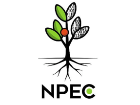
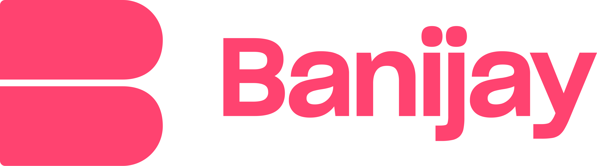
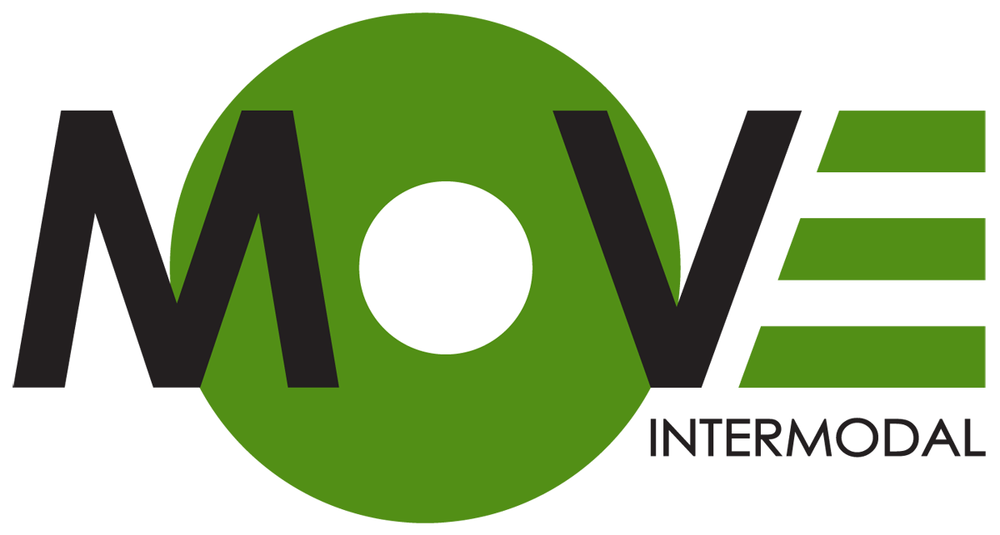

The PDFs were not what I expected
On building a document intelligence system and discovering that real-world PDFs bear almost no resemblance to the clean inputs your model was trained on.
Data Science & AI — Breda University of Applied Sciences
I design and build machine learning systems that solve real problems — from document intelligence to computer vision and NLP.
Conversational AI system for intelligent retrieval and summarisation of engineering documentation.
View project →
Computer vision pipeline for automated trait extraction from high-throughput plant imagery.
View project →
NLP-driven analytics platform for audience insights and content performance across television formats.
View project →
RL-based scheduling agent that optimises resource allocation for event logistics under dynamic constraints.
View project →
I'm Shan Oomes, a final-year Data Science and AI student at Breda University of Applied Sciences. I'm driven by curiosity and the kind of problems that don't have a clean answer yet — I approach them with independent thinking and a commitment to figuring things out properly, not just quickly.
My experience spans both the analytical and the technical. At ABN AMRO MeesPierson I built dashboards and performed client data analyses for wealth management clients, presenting findings to senior management to support data-driven decisions in private banking. Before that I worked as a junior programmer at Flexpulse, developing front-end and back-end features for a SaaS driving school system in Python, PHP, and SQL.
I'm currently completing my graduation project at Equans — building AIDA, an AI system for intelligent document processing. It's the project that brings together everything I've learned: messy real-world data, decisions that matter, and the challenge of making a system that actually works outside of a controlled environment.
I bring technical depth and the ability to explain what I built to someone who wasn't in the room. That combination — build it, then make it legible — is what I'm looking for in my next role.